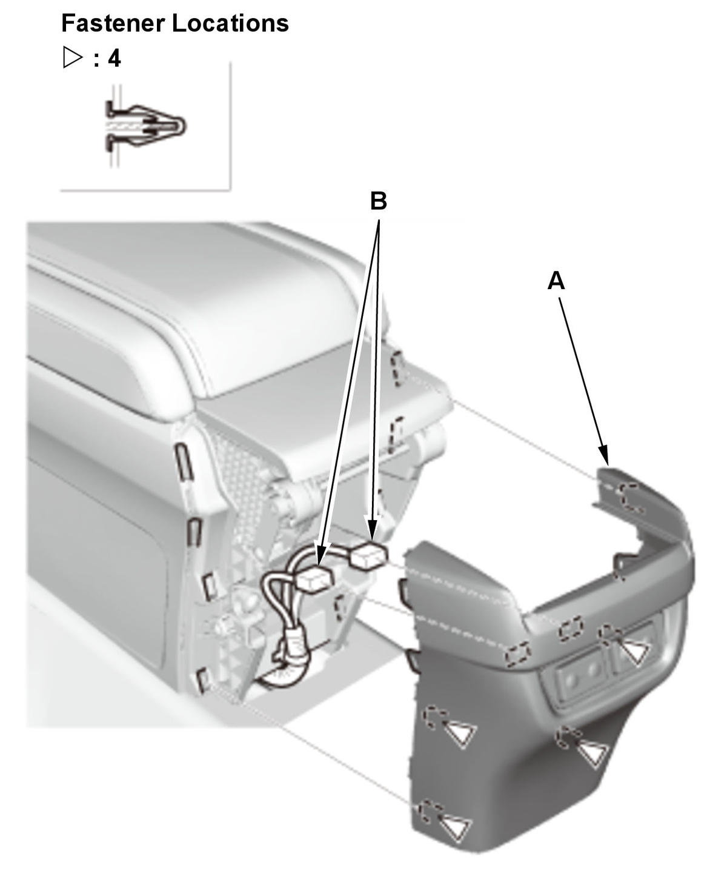

LEMON Manuals
: Even more car manuals for everyone: 1960-2025
Home
>>
Honda
>>
2016
>>
Civic LX, 4D Sedan, Automatic CVT Trans
>>
Repair and Diagnosis
>>
Body & Frame
>>
Exterior/Interior Trim
>>
Interior Panels / Trim - Service Information
>>
Removal and Installation
>>
Center Console Rear Trim Removal and Installation
>>
Removal and Installation
Removal and Installation
Center Console Rear Trim - Remove

Courtesy of HONDA, U.S.A., INC.
1. Remove the center console rear trim (A).
2. With rear seat heater: Disconnect the connectors (B).
All Removed Parts - Install
1. Install the parts in the reverse order of removal.